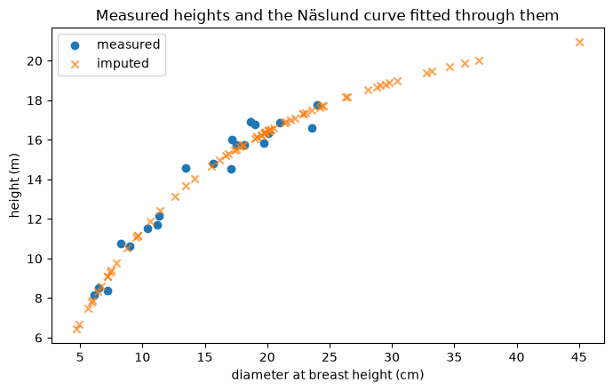

Competition indices on a simulated stand#
This notebook walks a full individual-tree competition workflow:
generate a randomly located stand on two circular plots,
fit the Näslund height curve and impute the heights that were never measured,
compute several competition indices and compare competitor-selection rules.
The stand is synthetic so the notebook is self-contained, but nothing here is specific to simulated data – swap in a real stem map and the same calls apply.
Notebook objectives#
Show that a partially measured inventory is the normal case, and how imputation fills the gaps without losing track of what was measured.
Show that competition indices are chosen together with a competitor-selection rule, and that changing the rule changes the answer.
Show where each number comes from: every index and every published selection rule carries its own citation.
Prerequisites#
pyforestryinstalled from this repository.Run the cells in order. All randomness is seeded, so the numbers below are reproducible.
[1]:
import random
from math import cos, pi, sin, sqrt
import matplotlib.pyplot as plt
import pandas as pd
from pyforestry.base.competition import (
INDEX_REGISTRY,
BitterlichBAF,
FixedRadius,
LeeGadowRadius,
MeanHeightRadius,
NearestNeighbours,
SearchCone,
competition_indices,
index_source,
selector_source,
)
from pyforestry.base.helpers import CircularPlot, Stand, Tree
from pyforestry.base.helpers.primitives import Position
from pyforestry.base.helpers.tree_species import TreeSpecies
RNG = random.Random(20260726) # seeded: every number below is reproducible
1. Generate a random stand#
Two circular plots of 10 m radius. Stems are placed uniformly over each plot – note the sqrt on the radius, without which points would bunch toward the centre – and diameters are drawn from a lognormal, which gives the usual right-skewed diameter distribution.
Heights are the realistic part: in a real inventory only a sample of trees is measured for height. Here roughly one tree in four gets a measured height, and the rest are left blank for step 2 to fill in.
[2]:
PLOT_RADIUS_M = 10.0
TREES_PER_PLOT = 45
HEIGHT_SAMPLE_RATE = 0.25
SPECIES = TreeSpecies.Sweden.picea_abies
def true_height(diameter_cm: float) -> float:
"""A 'true' height-diameter relationship used only to generate the sample."""
return 1.3 + diameter_cm**2 / (1.15 + 0.20 * diameter_cm) ** 2
def make_plot(plot_id: int, centre: Position) -> CircularPlot:
"""Place TREES_PER_PLOT stems uniformly on a circular plot."""
trees = []
for k in range(TREES_PER_PLOT):
# Uniform over the disc: radius must be scaled by sqrt(u).
r = PLOT_RADIUS_M * sqrt(RNG.random())
theta = RNG.uniform(0.0, 2.0 * pi)
# Two cohorts: a main canopy plus a suppressed understory. Real stands
# have both, and without the understory the 0.3 * d_i size screen has
# nothing to remove.
if RNG.random() < 0.30:
diameter = min(45.0, max(4.0, RNG.lognormvariate(2.05, 0.30)))
else:
diameter = min(45.0, max(4.0, RNG.lognormvariate(3.05, 0.28)))
measured = None
if RNG.random() < HEIGHT_SAMPLE_RATE:
# Measured heights carry a little observation noise.
measured = round(true_height(diameter) + RNG.gauss(0.0, 0.4), 2)
trees.append(
Tree(
position=(centre.X + r * cos(theta), centre.Y + r * sin(theta)),
species=SPECIES,
diameter_cm=round(diameter, 1),
height_m=measured,
uid=f"p{plot_id}t{k:02d}",
)
)
return CircularPlot(id=plot_id, position=centre, radius_m=PLOT_RADIUS_M, trees=trees)
stand = Stand(plots=[make_plot(1, Position(0.0, 0.0)), make_plot(2, Position(40.0, 0.0))])
all_trees = [t for p in stand.plots for t in p.trees]
n_measured = sum(1 for t in all_trees if t.height_m is not None)
print(f"{len(all_trees)} trees on {len(stand.plots)} plots")
print(f"{n_measured} have a measured height, {len(all_trees) - n_measured} do not")
90 trees on 2 plots
21 have a measured height, 69 do not
2. Fit and apply the Näslund height imputer#
Stand.impute fits Näslund’s height-diameter curve to the stand’s own measured pairs and writes a modelled height for every tree that lacks one.
The measured heights are never touched. A modelled value goes into Tree.imputed alongside the imputer that produced it and its citation, and Tree.value_of reads the two together:
tree.height_m– the measurement, orNonetree.value_of("height_m")– measured if present, else imputedtree.provenance("height_m")–"measured"or"imputed"
[3]:
assigned = stand.impute("height_m")
print(f"imputed a height for {assigned} trees")
example = next(t for t in all_trees if t.provenance("height_m") == "imputed")
source = example.imputed_source("height_m")
print(f"\nexample tree {example.uid}: dbh {example.diameter_cm} cm")
print(f" height_m (measured) : {example.height_m}")
print(f" value_of : {example.value_of('height_m'):.2f} m")
print(f" provenance : {example.provenance('height_m')}")
print(f" produced by : {example.imputed['height_m'].imputer_id}")
print(f" citation : {source.author} ({source.year})")
print(f" {source.title}")
imputed a height for 69 trees
example tree p1t02: dbh 5.6 cm
height_m (measured) : None
value_of : 7.47 m
provenance : imputed
produced by : naslund_height_imputer
citation : Näslund, M. (1936)
Skogsförsöksanstaltens gallringsförsök i tallskog
Every tree now has a usable height, and each one still knows which kind it is. That distinction matters downstream: a model fitted on measured heights should not silently be fed interpolated ones without the user knowing.
[4]:
summary = pd.DataFrame(
{
"uid": [t.uid for t in all_trees],
"dbh_cm": [float(t.diameter_cm) for t in all_trees],
"height_m": [t.value_of("height_m") for t in all_trees],
"provenance": [t.provenance("height_m") for t in all_trees],
}
)
print(summary.groupby("provenance")["height_m"].agg(["count", "mean", "min", "max"]).round(2))
count mean min max
provenance
imputed 69 15.00 6.43 20.94
measured 21 13.83 8.15 17.78
[5]:
fig, ax = plt.subplots(figsize=(7, 4.5))
for label, marker, alpha in (("measured", "o", 1.0), ("imputed", "x", 0.7)):
subset = summary[summary["provenance"] == label]
ax.scatter(subset["dbh_cm"], subset["height_m"], marker=marker, alpha=alpha, label=label)
ax.set_xlabel("diameter at breast height (cm)")
ax.set_ylabel("height (m)")
ax.set_title("Measured heights and the Näslund curve fitted through them")
ax.legend()
fig.tight_layout()
plt.show()

The imputed points lie exactly on the fitted curve, which is what an interpolated value is – it carries no residual scatter. The measured points scatter around it. Anything that treats the two alike will understate the variance it is working with.
3. Competition indices#
competition_indices takes a plot (or a stand, or a plain list of trees), the indices you want, and a rule for choosing competitors. Here are three indices with contrasting behaviour:
``Heg`` (Hegyi 1974) – distance-dependent size ratio; higher means more competition.
``BAL`` (Wykoff et al. 1982) – basal area of larger trees, distance independent.
``drg`` (Hamilton 1986) – the subject’s diameter over the plot’s quadratic mean diameter. Note this one runs the other way: a high value means the subject dominates.
[6]:
plot = stand.plots[0]
results = competition_indices(
plot,
indices=["Heg", "BAL", "drg"],
selector=FixedRadius(8.0, min_size_ratio=0.3),
)
table = pd.DataFrame(
{
"uid": [r.tree.uid for r in results],
"dbh_cm": [float(r.tree.diameter_cm) for r in results],
"n_comp": [r.n_competitors for r in results],
**{name: [r.indices[name] for r in results] for name in ("Heg", "BAL", "drg")},
}
).sort_values("dbh_cm")
print(table.head(5).round(3).to_string(index=False))
print(" ...")
print(table.tail(5).round(3).to_string(index=False))
uid dbh_cm n_comp Heg BAL drg
p1t37 4.7 19 24.554 39.106 0.252
p1t31 4.9 29 31.089 39.046 0.263
p1t02 5.6 13 23.026 38.968 0.300
p1t20 5.9 19 26.137 38.881 0.316
p1t28 6.1 24 20.130 38.788 0.327
...
uid dbh_cm n_comp Heg BAL drg
p1t29 24.4 24 5.038 9.669 1.308
p1t25 26.3 12 3.517 7.939 1.410
p1t11 26.4 21 3.837 6.197 1.415
p1t44 34.6 10 3.183 3.204 1.854
p1t34 35.8 11 1.814 0.000 1.919
Small trees carry high Heg and BAL and low drg; large trees the reverse. That is the sanity check you want – a suppressed stem is under more competition than a dominant one.
n_comp counts the competitors the selector kept, and it drives Heg only. BAL and drg are plot descriptors: they are computed over every other tree on the plot whatever the selector does, which is what makes BAL comparable between runs that used different selection rules.
In the correlation below, drg sits at exactly 1.000 against diameter. That is not a finding: drg is the subject’s diameter divided by a plot-level constant, so within one plot it is diameter on a different scale. It earns its place as a predictor across plots of differing size, not within one.
[7]:
print(table[["dbh_cm", "Heg", "BAL", "drg"]].corr().round(3).to_string())
dbh_cm Heg BAL drg
dbh_cm 1.000 -0.870 -0.924 1.000
Heg -0.870 1.000 0.692 -0.870
BAL -0.924 0.692 1.000 -0.924
drg 1.000 -0.870 -0.924 1.000
4. The selection rule is part of the index#
An index value is only interpretable next to the rule that chose its competitors. The same Heg formula on the same plot gives materially different numbers under different rules, so the rule has to be reported alongside the index.
[8]:
selectors = {
"FixedRadius(8 m)": FixedRadius(8.0),
"MeanHeightRadius(0.4)": MeanHeightRadius(0.4),
"MeanHeightRadius(0.25)": MeanHeightRadius(0.25),
"LeeGadowRadius(k=2)": LeeGadowRadius(2.0),
"LeeGadowRadius(k=3)": LeeGadowRadius(3.0),
"BitterlichBAF(2)": BitterlichBAF(2.0),
"NearestNeighbours(4)": NearestNeighbours(4),
"SearchCone(80 deg)": SearchCone(80.0),
}
rows = []
for label, selector in selectors.items():
res = competition_indices(plot, indices=["Heg"], selector=selector)
src = selector_source(selector)
rows.append(
{
"selector": label,
"mean_competitors": sum(r.n_competitors for r in res) / len(res),
"mean_Heg": sum(r.indices["Heg"] for r in res) / len(res),
"citation": f"{src.author.split(',')[0]} {src.year}" if src else "(plain geometry)",
}
)
print(pd.DataFrame(rows).round(3).to_string(index=False))
selector mean_competitors mean_Heg citation
FixedRadius(8 m) 18.533 10.012 (plain geometry)
MeanHeightRadius(0.4) 10.578 6.891 Sims 2009
MeanHeightRadius(0.25) 4.444 4.191 Sims 2009
LeeGadowRadius(k=2) 9.067 6.283 Lee 1997
LeeGadowRadius(k=3) 18.133 9.868 Lee 1997
BitterlichBAF(2) 13.000 6.066 Bitterlich 1952
NearestNeighbours(4) 4.000 3.209 (plain geometry)
SearchCone(80 deg) 31.289 8.765 Pretzsch 2009
Note how far apart these are. Every number in these rules is a parameter with a literature default, not a constant: MeanHeightRadius(0.4) uses the fraction Sims et al. (2009) tested, and dropping it to 0.25 shrinks the zone and the index with it.
SearchCone looks indiscriminate here, and at this scale it is: an 80 degree cone reaches h / tan(50 deg) horizontally, so a 20 m neighbour competes out to almost 17 m – further than this 10 m plot is wide. The cone discriminates on larger neighbourhoods, or at a narrower angle.
SearchCone and BitterlichBAF are the two rules whose reach depends on the neighbour’s size rather than the subject’s – the cone on its height, the angle gauge on its diameter. That is what a variable-radius rule means: under BitterlichBAF(2) a 60 cm neighbour competes out to 21 m while a 10 cm one stops at 3.5 m. Neither defines a single competition zone, so neither reports a zone_radius_m, and neither is edge-corrected – see section 5.
The two screens#
The comparison this set is drawn from applies two screens together for its influence-zone approaches: a neighbour must be at least 30% of the subject’s diameter, and must not stand in the shadow of a nearer competitor within 30 degrees. Reproducing those approaches needs both.
[9]:
screens = {
"no screens": FixedRadius(8.0),
"size only (0.3)": FixedRadius(8.0, min_size_ratio=0.3),
"shadow only (30 deg)": FixedRadius(8.0, elimination_angle_deg=30.0),
"both": FixedRadius(8.0, min_size_ratio=0.3, elimination_angle_deg=30.0),
}
for label, selector in screens.items():
res = competition_indices(plot, indices=["Heg"], selector=selector)
mean_n = sum(r.n_competitors for r in res) / len(res)
mean_h = sum(r.indices["Heg"] for r in res) / len(res)
print(f"{label:24s} mean competitors {mean_n:5.2f} mean Heg {mean_h:6.3f}")
no screens mean competitors 18.53 mean Heg 10.012
size only (0.3) mean competitors 16.98 mean Heg 9.856
shadow only (30 deg) mean competitors 9.11 mean Heg 6.849
both mean competitors 8.76 mean Heg 6.888
5. Edge correction#
A tree near the plot boundary has part of its competition zone outside the plot, so its distance-dependent indices come out too low. Each result reports observed_zone_fraction, the share of the zone that was actually inside, and by default the spatial indices are divided by it.
[10]:
raw = competition_indices(
plot, indices=["Heg"], selector=FixedRadius(8.0), edge_correction=None
)
corrected = competition_indices(plot, indices=["Heg"], selector=FixedRadius(8.0))
edge = pd.DataFrame(
{
"uid": [r.tree.uid for r in raw],
"dist_from_centre_m": [
round(((r.tree.position.X - plot.position.X) ** 2
+ (r.tree.position.Y - plot.position.Y) ** 2) ** 0.5, 2)
for r in raw
],
"observed_fraction": [round(r.observed_zone_fraction, 3) for r in raw],
"Heg_raw": [round(r.indices["Heg"], 3) for r in raw],
"Heg_corrected": [round(r2.indices["Heg"], 3) for r2 in corrected],
}
).sort_values("dist_from_centre_m")
print("Trees nearest the plot centre (zone fully observed):")
print(edge.head(3).to_string(index=False))
print("\nTrees nearest the boundary (zone partly outside):")
print(edge.tail(3).to_string(index=False))
Trees nearest the plot centre (zone fully observed):
uid dist_from_centre_m observed_fraction Heg_raw Heg_corrected
p1t05 0.73 1.000 5.119 5.119
p1t28 1.43 1.000 20.130 20.130
p1t14 2.41 0.986 5.349 5.427
Trees nearest the boundary (zone partly outside):
uid dist_from_centre_m observed_fraction Heg_raw Heg_corrected
p1t02 9.43 0.455 10.486 23.026
p1t18 9.45 0.454 8.708 19.171
p1t01 9.96 0.417 4.036 9.682
Only the boundary trees change; a tree whose whole zone is inside the plot has observed_fraction == 1.0 and is left alone.
Three things are deliberately not corrected:
Non-spatial indices.
BALand its relatives are plot-level sums and do not depend on where in the plot the subject sits. They also ignore the selector entirely:BALis the basal area per hectare in trees larger than the subject over the whole plot, so it does not shrink when the search radius does.``SBAr`` and ``Almdg``. A ratio and a weight-normalised mean of areas do not scale with the observed share – halving the competitor set leaves both unchanged – so dividing them would invent competition.
INDEX_REGISTRY[name].additivesays which indices the correction applies to.Selections with no zone fixed in advance (
SearchCone,NearestNeighbours,BitterlichBAF). Their reach is an outcome of the data, and a neighbourhood truncated by the boundary reaches less far – so using it to size the correction would under-correct by exactly the amount at issue.
6. Where the numbers come from#
Every index carries the citation of the paper that proposed it – not the review they were collected from. That means a result can always answer “according to whom?”.
[11]:
catalogue = pd.DataFrame(
[
{
"index": name,
"spatial": entry.spatial,
"author": index_source(name).author,
"year": index_source(name).year,
}
for name, entry in INDEX_REGISTRY.items()
]
).sort_values(["spatial", "year"])
print(catalogue.to_string(index=False))
index spatial author year
BA-gj False Steneker, G.A. & Jarvis, J.M. 1963
BAL False Wykoff, W.R., Crookston, N.L. & Stage, A.R. 1982
Sdr False Lorimer, C.G. 1983
drg False Hamilton, D.A. 1986
BAr False Corona, P. & Ferrara, A. 1989
BALr False Vanclay, J.K. 1991
BALMOD False Schröder, J. & von Gadow, K. 1999
Sl True Staebler, G.R. 1951
SOr True Gerrard, D.J. 1969
SOdr True Bella, I.E. 1971
Heg True Hegyi, F. 1974
SAng1 True Lin, J.Y. 1974
Almdg True Alemdag, I.S. 1978
Sdrl1 True Lorimer, C.G. 1983
Sdrl2 True Martin, G.L. & Ek, A.R. 1984
SBAr True Daniels, R.F., Burkhart, H.E. & Clason, T.R. 1986
SAng2 True Rouvinen, S. & Kuuluvainen, T. 1997
SdrAng True Rouvinen, S. & Kuuluvainen, T. 1997
Summary#
Stand.impute("height_m")fits Näslund’s curve to the stand’s own measured pairs and fills the gaps, keeping measured and modelled values distinct and recording which model produced each modelled one.competition_indices(...)computes any of the eighteen indices; passindices=to choose andselector=to say how competitors are found.The selection rule is part of the result. Report it alongside the index, and treat its parameters as parameters – the defaults are one study’s choices.
Distance-dependent indices are biased low at the plot edge;
observed_zone_fractionreports the exposure and the default corrects for it.
Next steps#
The influence-zone indices (
Sl,SOr,SOdr) additionally need a crown radius. Supply one withstand.impute("crown_radius_m", <callable>)or thecrown_radius=argument; a caller-supplied value is recorded as uncited.SearchCone(apex="crown_base")needscrown_base_height_m, which can be imputed the same way.